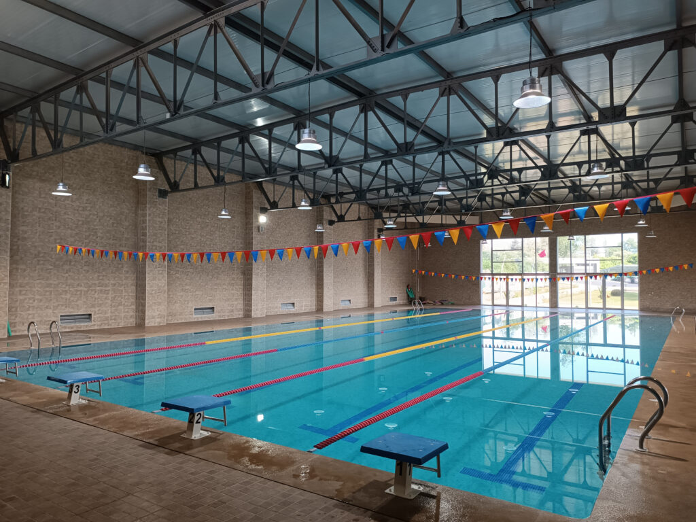

Tennis
Le plaisir du jeu, à votre rythme.
8 hectares de sport, de détente et de partage au cœur de Rabat.
de nature et de vie
pour trouver votre rythme
et de moments partagés
Au Club de l’Agriculture, le sport rencontre la nature et les moments partagés. Un cadre verdoyant pour pratiquer vos activités, prendre du temps pour vous et vous retrouver en famille.
Une histoire de plus de 40 ans, une rénovation complète et une inauguration en 2022 : le Club poursuit sa vocation de sport et de partage.

Bouger, se détendre, se retrouver. Découvrez les activités et les espaces qui donnent vie au Club.
Le plaisir du jeu, à votre rythme.
Se retrouver et partager le terrain.
Un espace aquatique couvert et chauffé.
Un espace consacré à votre entraînement.
Une parenthèse dédiée à la détente.
Un lieu de convivialité ouvert au public.
Des moments de détente au grand air.
Le plaisir du jeu en équipe.
Des espaces pour différentes pratiques sportives.
Les petits aussi ont leur espace.
Bouger et s’entraîner au grand air.
Un moment de réflexion et de jeu à partager.
L’hébergement au sein du Club.
Des espaces pour vos rencontres professionnelles.
14 / 14
Quatre packs à découvrir pour préparer votre adhésion au Club AGRI.
Football, natation et tennis : les écoles sportives du Club invitent les enfants à découvrir le plaisir d’apprendre et de jouer ensemble.
Le jeu collectif et le plaisir de jouer ensemble.
Découvrir le plaisir de la natation.
Découvrir le jeu et progresser sur le court.
Une promenade à travers les espaces du Club de l’Agriculture.
Découvrez les packs et préparez votre adhésion. Les conditions d’accès et les modalités d’inscription sont à consulter auprès du Club.
Découvrir les packs